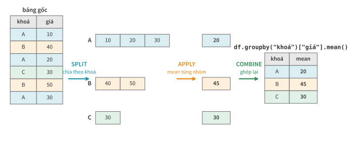
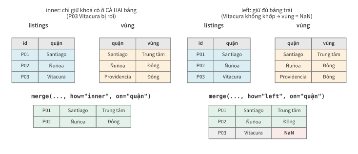

Học kì 1, năm học 2026–2027
Viện Trí tuệ nhân tạo, Trường ĐH Công nghệ, ĐHQGHN
Index, apply, groupby, ghép nhiều bảng.
loc, cột mới, thống kê cơ bản.groupby, bài này sẽ học kỹ.Dữ liệu gồm 18.534 phòng tại Santiago và một số bảng phụ.
Index xác định danh tính của từng dòng, không phải số thứ tự.
d = df.set_index("id")
d.loc[978070332077815549, ["neighbourhood", "price"]]
neighbourhood Ñuñoa
price 45647.0
Index là khoá tra cứu: tìm phòng theo ID thay vì nhớ vị trí của dòng.
ID Airbnb từ năm 2022 dài 18–19 chữ số — 82% listing Santiago thuộc dạng này; ID cũ chỉ có 5–8 chữ số.
s = pd.Series([10, 20, 30], index=[2, 0, 1])
s.loc[2], s.iloc[2]
(10, 30)
loc[2] = dòng mang nhãn 2; iloc[2] = dòng thứ ba. Khi index là số nhưng không phải 0, 1, 2, …, cần phân biệt hai cách truy cập này.
Giá trung vị 2 snapshot, các quận không cùng thứ tự:
t9 = pd.Series({"Centro": 50, "Ñuñoa": 40, "Vitacura": 120})
t12 = pd.Series({"Ñuñoa": 44, "Centro": 55, "La Reina": 35})
((t12 - t9) / t9 * 100).round(1)
Centro 10.0
La Reina NaN
Vitacura NaN
Ñuñoa 10.0
pandas ghép Centro với Centro, Ñuñoa với Ñuñoa theo nhãn, không theo vị trí.
NaN mà không báo lỗi
(Vitacura, La Reina ở slide trước).isna().
NaN mới xuất hiện = có nhãn không khớp.
gia_quan = df.groupby("neighbourhood")["price"].median()
gia_quan.reset_index().head(2)
neighbourhood price
0 Cerrillos 45500.0
1 Cerro Navia 36992.0
groupby trả kết quả với khoá nằm ở index. Dùng reset_index() để đưa khoá về lại thành cột khi cần merge, vẽ hoặc ghi file.
Dùng map hoặc apply khi phép toán vector hoá không diễn đạt được yêu cầu.
| Nấc | Cú pháp | Tốc độ |
|---|---|---|
| 1. Vector hoá có sẵn | df["price"] * 28, .str.lower() | ⚡⚡⚡ |
| 2. map — hàm/dict theo từng giá trị | s.map(clean_price) | ⚡⚡ |
| 3. apply theo hàng | df.apply(f, axis=1) | 🐌 |
Ưu tiên phép toán vector hoá có sẵn; chỉ dùng map hoặc apply khi phép toán đó không diễn đạt được yêu cầu.
viet_hoa = {"Entire home/apt": "Nguyên căn",
"Private room": "Phòng riêng",
"Shared room": "Phòng chung",
"Hotel room": "Khách sạn"}
df["loai"] = df["room_type"].map(viet_hoa)
df["loai"].value_counts().head(2)
loai
Nguyên căn 15004
Phòng riêng 3413
map với dict thường dùng để chuẩn hoá nhãn hoặc gom nhóm giá trị.
Giá trị ngoài dict trở thành NaN và cần được kiểm tra.
gia_chuoi = pd.Series(["$45,647.00", "N/A", "$19,856.00"])
gia_chuoi.map(clean_price) # hàm bài 2, chạy cả cột
0 45647.0
1 NaN
2 19856.0
dtype: float64
Bảng listings đầy đủ có cột giá ở dạng chuỗi này;
hàm clean_price từ bài 2 có thể được dùng lại.
def diem_hap_dan(r):
if pd.isna(r["price"]) or r["price"] == 0:
return None
return r["number_of_reviews_ltm"] / r["price"] * 10_000
df["hap_dan"] = df.apply(diem_hap_dan, axis=1)
apply(axis=1) gọi hàm Python cho từng dòng nên chậm hơn vector hoá.
Ví dụ trên có thể viết thành một biểu thức vector:
df["number_of_reviews_ltm"] / df["price"] * 1e4. Chỉ dùng apply khi
logic không thể biểu diễn rõ ràng bằng phép toán vector hoá.
Các câu hỏi "theo từng nhóm" thường được biểu diễn bằng groupby.

df.groupby(["neighbourhood", "room_type"])["price"].median().head(4)
neighbourhood room_type
Cerrillos Entire home/apt 52116.0
Private room 29100.0
Shared room 40169.0
Cerro Navia Entire home/apt 51261.0
Kết quả mang MultiIndex (nhãn hai tầng). Có thể dùng reset_index() nếu muốn thao tác với các khoá như cột thông thường.
tk = df.groupby("neighbourhood")["price"].agg(
trung_vi="median", so_phong="size")
tk[tk["so_phong"] >= 500].nlargest(3, "trung_vi")
trung_vi so_phong
neighbourhood
Lo Barnechea 426230.0 824
Las Condes 97460.0 2862
Providencia 72845.0 2997
Bài học từ bài 4: lọc cỡ nhóm ≥ 500 trước khi xếp hạng để tránh kết luận dựa trên nhóm chỉ có vài phòng.
trung_vi_quan = df.groupby("neighbourhood")["price"].transform("median")
df["he_so_gia"] = df["price"] / trung_vi_quan
df[df["he_so_gia"] > 20].shape[0] # đắt gấp hơn 20 lần trung vị quận mình
23
agg trả một dòng mỗi nhóm; transform trả
đúng độ dài bảng gốc — để so từng dòng với "chuẩn" của nhóm nó.
23 phòng có hệ số lớn hơn 20 là các ứng viên ngoại lai (outlier) cần kiểm tra.
df.pivot_table(values="price", index="neighbourhood",
columns="room_type", aggfunc="median")
room_type Entire home/apt Private room
neighbourhood
Las Condes 106129.0 40366.0
Providencia 81709.0 38400.0
Santiago 49352.0 31250.0
pivot_table = groupby hai khoá + trải một khoá ra thành cột. Bảng "quận × loại phòng" là định dạng phổ biến trong báo cáo.
Dữ liệu thực tế thường được phân tách thành nhiều bảng.
t9["snapshot"] = "2025-09" # thêm nguồn gốc cho từng bảng
t6["snapshot"] = "2026-06"
ca_hai = pd.concat([t9, t6], ignore_index=True)
ca_hai.groupby("snapshot").size()
snapshot
2025-09 16772
2026-06 18534
Thêm cột snapshot trước khi concat để giữ nguồn gốc của từng dòng;
sau đó có thể so sánh theo thời gian bằng groupby.

how là quyết định giữ hay bỏ các dòng không khớp.
vung = pd.DataFrame({
"neighbourhood": ["Santiago", "Providencia", "Las Condes", "Ñuñoa"],
"vung": ["Trung tâm", "Đông", "Đông", "Đông"],
})
m = df.merge(vung, on="neighbourhood", how="left")
m.groupby("vung")["price"].median()
vung
Trung tâm 47755.0
Đông 76628.5
Merge bổ sung cột vung; nhờ đó có thể phân tích giá theo vùng dù
dữ liệu gốc chưa có thông tin này.
len(df), len(m), m["vung"].isna().sum()
(18534, 18534, 3680)
vung = NaN: các quận này chưa có trong bảng tra cứu.
m = df.merge(vung, on="neighbourhood",
how="left", validate="m:1")
# nhiều listing (m) ứng với đúng 1 dòng vùng (1)
# vi phạm -> phát sinh MergeError
validate= và kiểm tra
số dòng để phát hiện khoá trùng hoặc quan hệ ghép không đúng.
loc theo nhãn, iloc theo vị trí;
phép toán tự căn chỉnh (align) theo index.map và apply.groupby: agg đặt tên kèm cỡ nhóm, transform để so
từng dòng với nhóm, pivot_table cho bảng chéo.validate.how không dựa trên yêu cầu; không kiểm tra dòng bị loại hoặc nhân bản;
dùng apply(axis=1) cho phép tính có thể vector hoá.
len() hai bảng và đếm NaN ở cột mới.